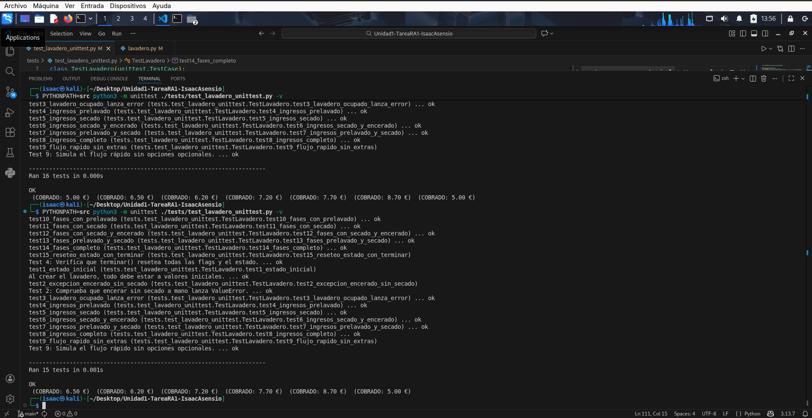

Pruebas de Test
Durante el proceso de depuración se detectaron varios errores en el código y en los tests.
A continuación se detallan uno por uno, con su explicación y la solución aplicada.
Fallos y correcciones
- Clase Lavadero
- Se llamaba al método
_hacer_lavadoen lugar dehacerLavado. - Corrección: Cambiar la llamada a
self.lavadero.hacerLavado(...).
- Test 3
- Se lanzaba
ValueErrorcuando debía serRuntimeError. - Corrección: Sustituir la excepción por
RuntimeError.
- Test 5
- Los ingresos esperados eran
6. - El cálculo correcto es
6.20(5.00 inicial + 1.20 coste de lavado). - Corrección: Cambiar ingresos esperados de
6a6.20.
- Test 7
- Los ingresos esperados eran
7.50. - Con prelavado a mano (1.50) y secado a mano (1.20), el total correcto es
7.70. - Corrección: Cambiar ingresos esperados de
7.50a7.70.
- Clase Lavadero – método
ejecutar_y_obtener_fases - El método estaba fuera de la clase por falta de tabulación.
- Corrección: Añadir la indentación correcta para que quede dentro de la clase.
- Test 9
fases_esperadas = [0, 1, 3, 4, 5, 6, 0].- Corrección: Cambiar a
[0, 1, 3, 4, 5, 7, 0].
- Test 10
fases_esperadas = [0, 1, 2, 3, 4, 5, 6, 0].- Corrección: Cambiar a
[0, 1, 2, 3, 4, 5, 7, 0].
- Test 11
- fases_esperadas = [0, 1, 3, 4, 5, 7, 0]`.
- Corrección: Cambiar a
[0, 1, 3, 4, 5, 6, 0].
- Test 12
fases_esperadas = [0, 1, 3, 4, 5, 7, 8, 0].- Corrección: Cambiar a
[0, 1, 3, 4, 5, 6, 0].
- Test 13
fases_esperadas = [0, 1, 2, 3, 4, 5, 7, 0].- Corrección: Cambiar a
[0, 1, 2, 3, 4, 5, 6, 0].
- Test 14
fases_esperadas = [0, 1, 2, 3, 4, 5, 7, 8, 0].- Corrección: Cambiar a
[0, 1, 2, 3, 4, 5, 6, 0].
- Test 15
- Se llamaba a
self.lavadero.hacerLavado(False, False, True). - No se puede encerar el coche sin haber realizado el secado a mano.
- Corrección: Cambiar a
self.lavadero.hacerLavado(False, True, True).
- Se llamaba a
Capturas de pantalla
